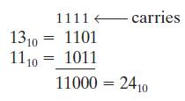
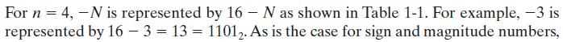

Lecture 4
Number Systems & Conversions
Decimal (Base 10)
- use a positional notation
- each digit is multiplied by an appropriate power of 10 depending on its position in the number
Example

Binary (Base 2)
- each binary digit is multiplied by the appropriate power of 2
Example

Note: Binary point separates the + and - powers of 2 in same way of decimal number
Power Series in R
Any postive integer - the radix or base of a number system
If the base is , then digits (0, 1, ..., ) are used
A number written in positional notation can be exapnded in a power series in
- The power series expansion can be used to convert ot any base.

- where is the coefficient of and .
Conversion of Decimal to Base (Division Method)

- This process is continued until finnally obtain
Note: the remainder obtained at each division step is one of the desired digits and the least significant is obtained first
Example
Base 8 to Decimal ()
- required digits are 0, 1, 2, 3, 4, 5, 6 and 7.
Base 16 to Decimal
Convert 53_10 to binary

Conversion of Decimal Fraction to Base (Successive Multiplication by )


represents the fractional part of the result and is the integer part
Multiplying by yields


- This process is continued until obtaining a sufficient number of digits
Note, the integer part obtained at each step is one of the desired digits and the most significant digit is obtained first
Example

- This process does not always terminate, but if it doesn't terminate, the result is a repeating fraction
Number of Binary Bit


- For hexadecimal, the bits are divided into groups of four, and each group is replaced by a hexadecimal digit
Example

Binary Arithmetic
Addition

- Carring 1 to a column is equivalent to adding 1 to that column

Subtraction
- Borrowing 1 from a column is equivalent to subtracting 1 from that column

- Example 2: in order to borrow 1 from the second column, we must in turn borrow 1 from the third column, etc.
Multiplication

Division

Representation of Negative Numbers
Three system to generate a negative number


Sign and Magnitude System
To represent both + and - numbers, first bit in a word is used as a sign bit (0 for plus and 1 for minus)
For an n-bit word, the first bit is the sign and the remaining n - 1 bits represent the magnitude of the number
an n-bit word can represent any one of positve integers or negative number
2's Complement Number System
a + number, , is represented by a 0 followed by the magnitude as in the sign and magnitude system
a - number, , is represented by its 2's complement,
- If the word length is n bits, the 2's complement of a postive integer is
- 2's Complement does not have 0 because postive number already includes (+)0
Example

1's Complement Number System
is represented by its 1's complement
The 1's complement of a positive integer is defined as
(Dis)Advantage of Three Representation in Addition and Subtraction

Addition of 2's Complement Numbers
The addition is carried out just as if all the numbers were positive, and any carry from the sign position is ignored
When the word length is n bits, overflow has occured if the correct representation of the sum (inclduing sign) requires more than n bits